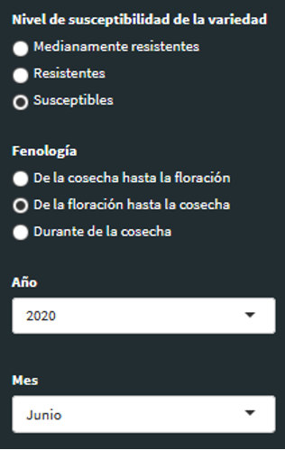
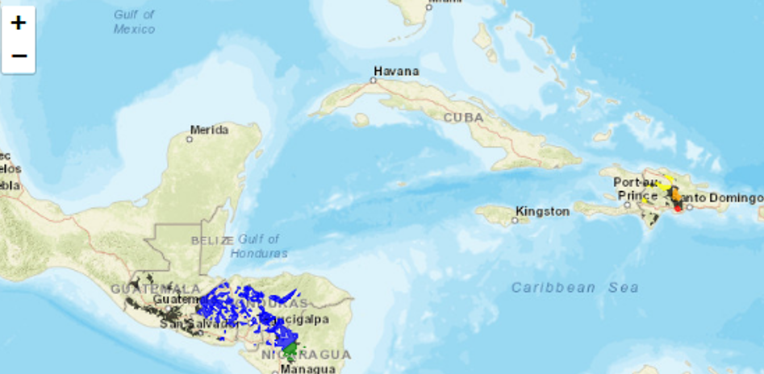
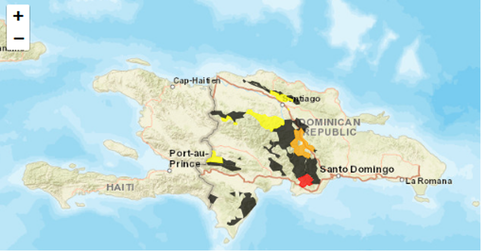
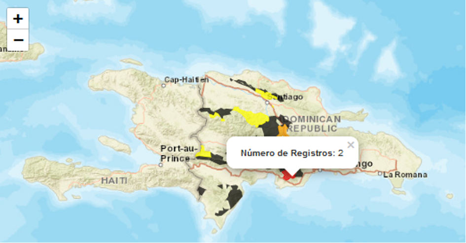
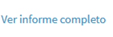

PROCAGICA es el Programa CentroAmericano de Gestión Integral de la roya del Café.
Proponemos alertas considerando las diferentes etapas de la fenología del café y el tipo de variedad.
Hay 3 etapas fenológicas posibles entre floración e inicio de la cosecha, durante la cosecha, después de cosecha y antes de la floración.
Hay 3 tipos de variedad susceptibles, medianamente resistentes, y resistentes. Las variedades medianamente resistentes son variedades tipo Lempira cuya resistencia fue superada pero que demuestran cierta resistencia incompleta. Esto puede reconsiderarse si el comportamiento de la variedad es muy parecido al de variedades susceptibles tradicionales.
Para leer la información obtenida, proponemos ver primero los círculos concéntricos representados a la derecha. Estos círculos les provee varias informaciones:
Para visualizar los mapas, se seleccionan el tipo de variedad y la etapa fenológica en el menú siguiente. Se pueden ver mapas anteriores cambiando el mes:
Las áreas en color representan las alertas en las áreas cafetaleras para las cuales se tiene información. Las áreas negras son áreas cafetaleras para las cuales no hay información:
Se puede hacer un zoom (utilizando +) y moviendo el mapa hacia la zona de interés, para ver más de cerca algunas áreas cafetaleras:
Cliqueando sobre las áreas cafetaleras, se tiene el número de parcelas monitoreadas que se usaron para determinar el color de alerta. En la zona en rojo de República Dominicana, son dos:
El administrador del sistema puede escribir un reporte que se encuentra bajo el mapa. Si se quiere mayor análisis, se puede redactar un informe más completo y subirlo al sistema. Este se puede abrir cliqueando en:
Favor enviarnos sus consultas o pregutnas a contacto@redpergamino.net o desde la aplicación escribirnos por medio del módulo de comunicaciones.
Puede descargar una versión en PDF de nuestro manual para imprimir o leer cuando no tenga conexión a Internet.
Descargar PDF